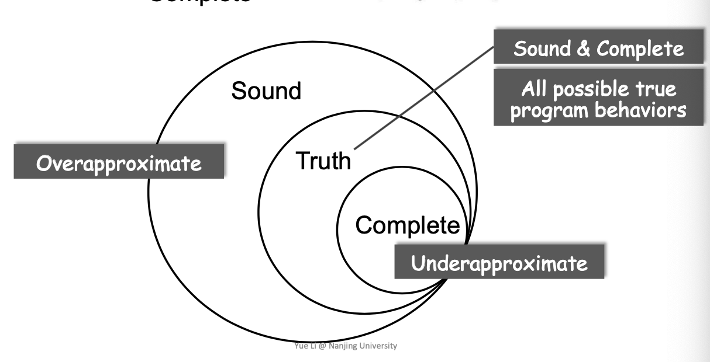
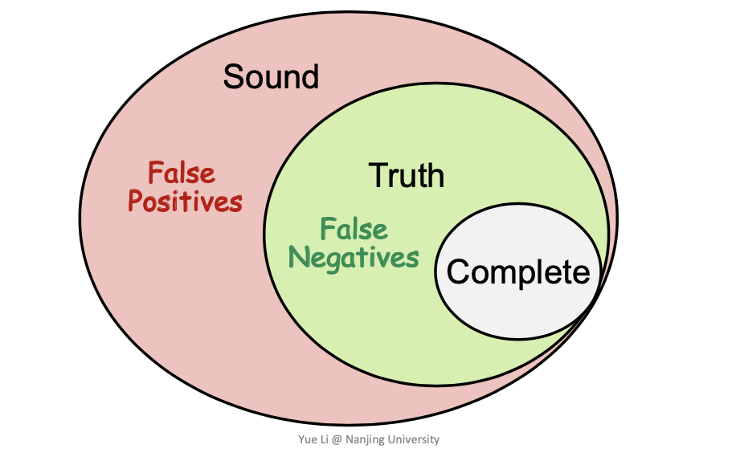

Abstract
编译器作为工业界对PL理论的部分实现——和编程语言，运行时环境一样只是机器解释世界的一个角度。而当我解锁了从更加PL的方式看待
计算这件事情之后，又打开了一扇通往新世界的大门。过去的几十年里Programming Language的内核并没有变化多少——但是程序本身却随着应用需求变的更加庞大和复杂。而静态程序分析作为PL的重要应用，其目的就在于在编译期确保程序的可靠性，安全性等各种性质。 Static Analysis analyzes a program P to reasono about its behaviors and determines whether it satisfies some properties before running P.
主要的学习资源是NJU-PASCAL团队的静态分析课程以及龙书和鲸书中的部分章节。
Static-Analysis
PL的大框架大体上可以分成三个部分:
- Theory
包括如何设计一个语言内核，一个类型系统，如何完成语义分析，如何形式化等等不同的理论，更多是作为学术研究的课题
- Environment
针对特定场景设计的编译器和运行时环境等
- Application
程序分析，程序合成，程序验证
而静态程序分析主要关注在程序的Reliability比如在程序运行前检测到空指针异常，内存泄漏等问题防止程序在运行过程中报运行时错误；Security比如隐私数据泄露，注入攻击
injection attack等；Optimization编译优化等方面。
Rice‘s Theorem
Any non-trivial property of the behavior of programs in a recursively enumerable language is undecidable.
这个定理有点哥德尔不完备定理的感觉——不存在一个完美的分析算能准确预测出程序的各种关键行为，即No Silver Bullet。这也引出了在实践中最重要的一个评判标准Sound和Complete。
这里的
recursively enumerable递归可枚举是图灵完备的另一种说法，简写为r.e.。
Sound and Complete
假设一个程序中存在10个
unknown error，一套分析框架不可能精确定位到这十个。而是在其值域范围内波动——不仅仅包含这10的集合就是Sound，只包含这10个的子集就是Complete。
伴随着这一对概念还有一对——
false negatives和false positives。
- False negatives
就是
Compromise soundness也就是缩小原来分析的量，这样会更加的complete——便会产生漏报
- False positives
就是
Compromise completeness也就是增大原来分析的量，这样会更加的sound——便会产生误报其实这里为什么要引入这一对概念我没有太理解……有点往回绕的意思。 这个图得好好理解一下。

在实践中，用的更多的标准是
compromising completeness也就是要让结果更加的sound但是损失了精确度。换句话讲，分析的结果一定要全面，但不一定精确。也就是说宁可误报一些分析行为，也不允许程序在运行时报异常——这样整个系统付出代价会更高。例子
2
3
4
5
6
7
8
9
10
11
12
13
14
15
16
17
18
19
> class Base{
> A fld;
> };
> class B : A{};
> class C : A{};
>
> Base a = new Base();
> if(condition) {
> B b = new B();
> a.fld = b;
> }else {
> C c = new D();
> a.fld = c;
> }
>
> // case
> B bTmp = (B)a.fld;
>
>
可以看到上例中的case中进行了一次强制转换，如果控制流走的是
!condition那么就会报错。如果分析器是sound的这里就应该检测出该程序的控制流错误——从而减少了BUG。tradeoff
因为
sound会分析出比理论更多的结果，所以导致分析的速度会变慢。 Static Analysis ensure soundness, while making good trade-offs between analysis precision and analysis speed——分析过程的本质上也是一种速度和精度之间的权衡。
To Conclude
大部分分析方式可以总结为下面的两个部分：
- Abstraction
就是将具体的程序特征和行为进一步抽象成分析器的元符号，完成一定意义的所谓形式化
Over-approximation
- transfer functions
In static analysis, transfer functions define how to evaluate different program statements on abstract values. Its defined according to “analysis problem” and the “semantics” of different program statements.
- control flows
程序的本质其实就是语句及语句之间的关联，映射到static analysis中就是（语句）
transfer functions和（关联）control flows。在抽象的基础上，进一步颗粒化程序运行行为。比如transfer functions定义为程序中statements和程序异常行为的语义比如声明语句，除零异常等。而control flows定义了程序的控制流比如一些if-else分支。这样就能更加细粒度的完成程序行为的建模，然后在模型基础上完成分析器预定的sound的分析结果。